Sample programs
Each sample is a single, self-contained C file that builds to a .lnx cartridge image. They double as worked examples of this fork’s Lynx-specific features — the static Lynx graphics, joystick and serial libraries, and the Suzy hardware-math operators !* !/ !%. Build any one with the command shown, or run make in examples/ to build them all. Each entry carries a screenshot captured by booting its .lnx on the headless GearLynx emulator (tests/emu/gearlynx).
Getting started
lynxdemo.cstarter
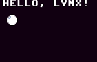
The smallest complete Lynx program in the tree — the place to start.
- Uses the static Lynx graphics library: no driver to install, just
gfx_init(). - A single hardware-scaled sprite bounces around a double-buffered screen.
- Fractionally scaled text is drawn on top each frame.
Games
breakout.cSuzy math
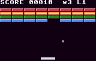
Single-file Breakout, built to exercise the fork's Suzy hardware math in real game code.
- Paddle deflection, brick-grid hit testing and score formatting all run on Suzy's 16×16 multiply and 32/16 divide (
!*!/!%) instead of software loops. - The whole scene — 32 bricks, paddle and ball — is one SCB chain drawn with a single
gfx_sprite()call; dead bricks are skipped with the SKIP bit. - All math sites stay in the main loop (never in IRQ), honouring the Suzy math contract.
invaders.ccolour + sound
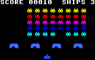
Single-file Space Invaders — a companion to breakout that adds colour and audio.
- Coloured enemies: every invader shares one sprite image; its row colour comes from the SCB penpal, and the RGB behind each pen is repainted from a 12-entry rainbow LUT so colour flows down the formation with zero extra sprite data.
- Direct Mikey audio (no sound driver): channel A = laser, B = explosion noise, C = marching bass loop, D = death / UFO, with per-frame volume envelopes.
- Suzy math lays out the grid, does the hit-test lookup, paces the march and formats the score.
raycaster.cscaled sprites
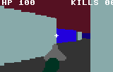
A Wolfenstein-3D-style raycaster that leans on three things Lynx hardware makes cheap.
- Hardware sprite scaling as a fill primitive: each vertical wall slice is one 2×1 solid sprite stretched by the SCB's vsize field — 80 scaled sprites paint the whole 3D view with no per-pixel plotting.
- Suzy hardware divide (
!/) powers the DDA delta-distances and slice-height divides in the main loop. - The 16-entry 12-bit palette gives free directional shading: N/S faces use a darker pen than E/W faces of the same wall.
sybil.cplatformer
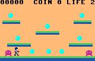
A single-screen Super-Mario-Bros.-style platformer starring Sybil.
- Multi-colour 16×16 hardware sprite with true transparency: Sybil uses an identity SCB penpal (pixel value N → pen N), so her ten colours come straight from the 12-bit palette and pixel value 0 is the transparent pen of a
TYPE_NORMALsprite. Idle / run / jump animation just swaps the data pointer; left-facing frames are pre-mirrored arrays. - Sprite scaling as a fill primitive: every platform is one 8×8 solid block sprite stretched to size with the SCB
hsize/vsizefields — a brown body plus a green cap, no tile map. - Direct Mikey audio (no driver): channel A = jump, B = coin / stomp, C = win & game-over jingles, D = ouch. Suzy math (
!*!/!%) formats the score and does coin scoring, all in the main loop.
Suzy hardware
muldivtest.ccorrectness
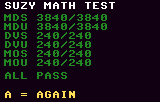
An on-hardware correctness test for the Suzy math operators !* !/ !%.
- Six sweeps over a corner-value table compare each Suzy result against an independent software reference, in signed and unsigned variants.
- Divisors 1, 127, 255 (narrow), 256 (boundary) and wide values exercise both sides of the small-divisor normalisation shift.
- Shows pass/total per sweep and the first failing case; “ALL PASS” means every case matched.
spritetest.cbuild-time packing
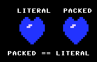
The offline counterpart to packtest: sprite data packed at build time by sp65, not at runtime.
- The Makefile runs the in-tree
sp65sprite converter (-c lynx-sprite,mode=packedandmode=literal) overheart.pcxto emit two C headers, which the sample#includes and drops straight into an SCBdatapointer — no runtime packer in the ROM. - Both encodings of the same 16×16 image are drawn side by side at 3× scale with one identity-penpal
SCB_REHV_PAL; only thePACKEDbit ofSPRCTL1and the data pointer differ, so the columns must be pixel-identical while the packed block is the smaller asset. heart.pcxkeeps pen 0 along both side edges, so no scan line ends on an odd pen value and Suzy's last-pixel bug needs no pad byte; the PCX itself is reproduced byheart.pcx.py.
spritesheet.csprite sheet
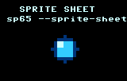
Sprite sheets the easy way: sp65's --sprite-sheet driver turns one image into one indexable frame table.
- One source image,
sheet.pcx(a 4-frame, 16×16 bouncing-ball strip generated bysheet.pcx.py), is sliced in a singlesp65 --sprite-sheetcall that emits one header: asheet_anim_data[]blob plus a generatedsheet_anim[]pointer table and asheet_anim_COUNTdefine. - Animating is just
scb.data = (unsigned char *)sheet_anim[frame]— no per-frame files, no hand-written table. - The frame data is byte-for-byte identical to the manual
--slicechain inspriteslice.c; only the packaging differs (verified on GearLynx, framebuffer read-back).
spriteslice.cslice + pop
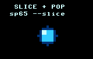
Sprite sheets the manual way: sp65's --slice/--pop chain, no special tooling.
- Reads the same
sheet.pcxonce and dices it into four standalone headers (frame0…frame3) in onesp65run, popping back to the whole image between cells. - Because each header is an independent
const unsigned char frameN[]sprite, the program gathers them into its ownframes[]table and tracks the count itself — the hand-work the driver inspritesheet.cremoves. - Draws the identical bouncing ball, proving the two routes produce the same frames; the right choice when you only want a few frames or want per-frame control.
suzyasync.casync math
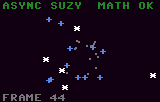
A realistic use of the fork's asynchronous Suzy math (start / poll / harvest).
- A perspective starfield: each star's screen position is a perspective divide, exactly the repeated divisor-varying divide the async API is built for.
- The per-star projection is software-pipelined so the slow signed divide overlaps real, non-Suzy CPU work (depth update, screen-bounds culling).
- A one-time self-check compares async results against the software operators; the HUD shows MATH OK or MATH FAIL.
suzyasyncbench.casync speed
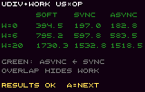
An honest speed benchmark for the asynchronous Suzy math API.
- For three workload sizes (no / light / heavy work) it times SOFT (software divide), SYNC (blocking Suzy) and ASYNC (overlapped Suzy) per divide.
- ASYNC runs unrelated CPU work in the shadow of the divide; the crossover where it overtakes SYNC is the whole point — with no overlap work it is honestly slower.
- Every loop cross-checks SOFT, SYNC and ASYNC so a speed win is never a correctness loss.
suzybench.caccuracy + speed
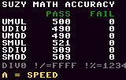
The thorough accuracy-and-speed test for the synchronous Suzy math operators.
- Correctness: each Suzy result is checked against the stock software operator over a corner cross-product plus a pseudo-random sweep, exercising all five runtime routines.
- Speed: a free-running 24-bit, 1µs Mikey timer times software vs Suzy loops over identical operands, for both 8-bit and 16-bit widths.
- A final screen pits cc65's compile-time strength reduction (shifts, AND masks, mulaxN helpers) against Suzy doing the same arithmetic.
packtest.cpacked vs literal
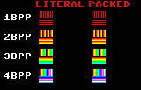
On-hardware proof that Suzy's PACKED (RLE) sprite encoding is interchangeable with the LITERAL encoding, at every depth.
- For each of the four Suzy depths (1/2/3/4 bpp) it draws the same 16×16 source image twice at 1× scale: a
LITERALcopy as the control and aPACKEDcopy built at runtime by an in-programpack_line()encoder. - The source is deliberately adversarial — a vertical rainbow on top (every pen value, all adjacent pixels distinct: exercises literal packets and the value→pen map) over solid horizontal bands (exercises RLE runs).
- Identity penpal and a
TYPE_NORMALsprite, so pixel value v draws pen v and value 0 is transparent; the literal copy carries the per-line pad byte and the packed copy's00000terminator supplies the same trailing slack for Suzy's last-pixel bug. If packing is correct the two columns are pixel-identical (verified on GearLynx, framebuffer read-back).
fonttest.cgraphics fonts
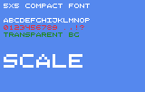
Shows the compact 5×5 Lynx graphics font and runtime font switching.
- Selects
GFX_FONT_COMPACT— 6-px pitch, transparent background, foreground drawn in the current pen. - Screen cleared to blue so the glyph transparency is obvious.
- Suzy scales the text sprite natively in 8.8, so the banner is drawn at 1×/2×/3×.
fontvar.cproportional font
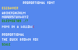
Shows the proportional (variable-width) Lynx graphics font and the advance-aware width query.
- Selects
GFX_FONT_VARIABLE— an all-caps pixel font whose glyphs are 1–5 px wide with a 1-px gap, transparent background, foreground in the current pen. The alphabet line makes the proportional spacing obvious: theIis tight, theMandWare wide. - Uses
gfx_gettextwidthto centre the title and to drop a caret flush against a measured string — a visible proof that the proportional width query matches the glyphsgfx_outtextactually draws. - The B button cycles the sample block through all three fonts (proportional / 5×5 / 8×8), and Suzy scales the proportional text in 8.8 so glyphs and spacing grow together at 1×/2×/3×.
textdir.cgraphics text
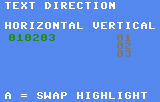
Shows how gfx_settextdir changes the way the text cursor advances between successive gfx_outtext calls.
- Each individual string is always drawn as a normal left-to-right strip; the direction only controls the post-draw cursor move — glyphs are never rotated.
GFX_TEXT_HORIZONTALadvances the cursor right by the string width, so chained tokens run on as010203;GFX_TEXT_VERTICALadvances it down by one text line (the scaled font height), so the same calls stack top to bottom.- Both panels issue an identical
gotoxy+ three cursorlessgfx_outtextsequence, isolating direction as the only difference.
Mikey display
setbpp.c2bpp mode
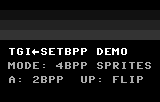
Demonstrates gfx_setbpp() — the Lynx 2-bit / monochrome display mode.
- Toggles Mikey's display DMA between 4bpp (Suzy-rendered) and a CPU-rendered 2bpp framebuffer (40 bytes/line × 102 lines, 4 pixels/byte).
- Greyscale palette turns 2bpp into a monochrome mode: solid bands, three ordered-dither fields and a CPU-animated bouncing block.
- Page-swap machinery is depth-independent, so the 2bpp screen is double buffered like any other.
Mikey audio
sndtune.csnd engine
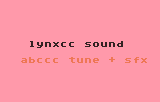
Plays a compiled ABC tune through the snd sound engine alongside a direct-register beep.
- The looping melody in
theme_music[]is the event stream theabccctune compiler emits offline fromtheme.abc;theme.sis committed beside the example so it links without the host tool present. snd_init()thensnd_play()starts the tune on channel 0, and the sound-timer interrupt advances the stream on its own whilemain()idles.- A one-shot rising blip on channel 3 uses only the
mikey_snd_*direct helpers —taps,octave,pitchandvolume— showing register-level SFX with no stream.
sfxtest.csnd engine
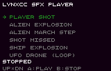
A player-style sound test for the snd engine's compiled effect streams: pick an effect from a scrolling menu and audition it.
- The effects in
sfx.sare listed in a table-driven menu (sfx_list[]); adding a row to the table adds a menu entry automatically, so the same front-end scales to any number of effects. - The d-pad moves the highlight (the list scrolls when it overflows),
Aplays the selected effect on channel 0, andBstops every channel; the selected row is green and a still-sounding effect turns yellow, driven bysnd_active(). - Each effect is a self-contained event stream handed straight to
snd_play(): the UFO drone loops until stopped, the rest are one-shots that free their channel on their own.
sfxdemo.csfx pack

A sound test for the reusable sfx pack — the batteries-included effect library (<lynx/sfx.h>) that layers over the snd engine.
- Fires every ready-made effect in the pack with the
sfx_<name>(ch)macros — all 56 entries, fromsfx_coinandsfx_laserto looping ambience likesfx_alarm— grouped into the same seven categories as<lynx/sfx.h>, each a pre-built compiled stream inlib/lynx-audio.lib. - Everything plays on channel 3, following the convention that reserves one channel for effects so they duck only themselves, never music on channels 0–2. The looping effects (alarm, ambient hum, engine, heartbeat) run until
Bcallssnd_stop_channel. - Links with no extra source files: effects are still pulled out of the audio library at member granularity, but because this demo references the whole catalogue as a browser, it links in every effect object rather than a subset.
Memory
heaptest.cheap correctness
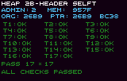
On-target verification that the heap allocator's 2-byte block header behaves correctly.
- Runs 17 checks across the public API —
malloc,calloc,realloc,free,_heapblocksize,_heapmemavail,_heapadd— covering exact sizing, in-place vs movingrealloc, coalescing and full reclamation. - Cross-checks the library against direct memory inspection: the raw size word stored just below each user pointer, the runtime heap variables (
_heaporg/_heapptr/_heapend) and the free-list head, confirming the raw block is always(user − 2). - Draws a colour-coded grid — each test green (OK) or red (X) — with a
PASS k/17summary and the first failing test; the heap variables are shown live in hex.
zeropage.czero page
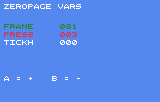
Places C globals in the zero page with the __zeropage attribute.
- Three counters are declared
__zeropage(from<zeropage.h>), so the compiler emits them into theZEROPAGEsegment and addresses them with the fast 2-byte zero-page opcodes —inc _frameassembles toE6, not the 3-byte absoluteEE. - No companion assembler file and no
#pragma zpsym: a single C declaration both defines the storage and marks the symbol. - The Lynx graphics text harness shows the live counters; A and B bump the zero-page
pressescounter up and down.
Network
comlynx.cserial + joypad
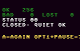
A ComLynx serial loopback self-test that needs no cable.
- The ComLynx wire is open-collector with Tx and Rx tied together, so every transmitted byte is also received — a full send/receive/close test runs against itself.
- Sends a known pattern at the Lynx-native 62500 baud, expects every byte back, then confirms reception stops once the port is closed.
- Also demonstrates the static joy API: all nine inputs from one
joy_read()call, with the one-line edge-detection idiom.